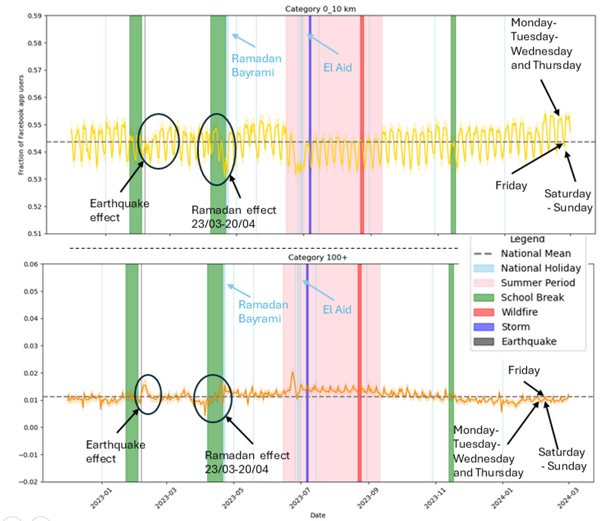

CLIMATE RISK · SPATIAL DATA SCIENCE
Coastal Storm-Swell Risk Modelling
Canary Islands · IMPLACOST · University of La Laguna
Analysis of extratropical storm swells affecting the Canary Islands using environmental data, spatial statistics, clustering and machine-learning methods.
View project →